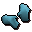
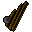
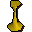
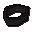

Hero's Quest
Scripts in
scripts/quests/quest_hero/NPCs involved
Items involved

Ice gloves
Oily fishing rod
Pete's candlestick
Thieves' armbandInvolvement is derived from identifiers referenced by the quest scripts.